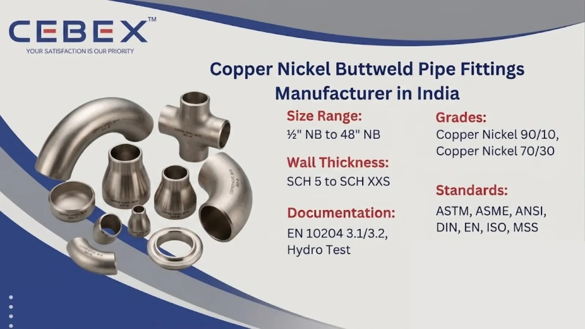

Leading Manufacturer & Exporter of Copper Nickel Buttweld Pipe Fittings
In demanding marine, offshore, and industrial piping applications, the reliability and corrosion resistance of piping components are essential for ensuring operational safety and long-term system performance. As a leading Copper Nickel Buttweld Pipe Fittings Manufacturer in India, CEBEX STEEL INDIA supplies premium-quality copper nickel pipe fittings engineered for highly corrosive and seawater environments.
Our Copper Nickel Buttweld Pipe Fittings are widely used in marine engineering, shipbuilding, desalination plants, heat exchangers, condensers, offshore platforms, and industrial process piping systems where excellent resistance to seawater corrosion and biofouling is critical. We manufacture seamless, welded, and fabricated copper nickel fittings including elbows, tees, reducers, stub ends, pipe caps, crosses, and custom fittings in compliance with ASTM, ASME, DIN, EN, ANSI, and MSS international standards.

Choosing the right Copper Nickel Buttweld Pipe Fittings supplier is critical for ensuring the integrity and reliability of piping systems operating in marine and corrosive environments. CEBEX STEEL INDIA is recognized globally for delivering high-performance copper nickel fittings backed by strict quality control, technical expertise, and reliable export capabilities. We are an ISO 9001:2015 certified company manufacturing buttweld pipe fittings according to international quality standards for critical industrial applications.
Our in-house testing and inspection department performs comprehensive quality checks including PMI testing, hydrostatic testing, radiographic examination, ultrasonic testing, hardness testing, and dimensional verification. Every Copper Nickel Buttweld Pipe Fitting is fully traceable from raw material procurement to final dispatch and is supplied with complete documentation including EN 10204 3.1/3.2 Mill Test Certificates, chemical analysis reports, mechanical test reports, and NDT certificates. Our experienced export logistics team ensures secure packaging, smooth documentation, and timely worldwide delivery for EPC projects and industrial buyers.
Our Copper Nickel Buttweld Pipe Fittings are manufactured using high-quality copper nickel alloys sourced from approved mills and processed under stringent quality control systems. Copper nickel alloys are widely preferred for marine and offshore piping systems due to their excellent resistance to seawater corrosion, erosion corrosion, stress corrosion cracking, and marine biofouling.
The following table summarizes the technical specifications and features of our Copper Nickel Buttweld Pipe Fittings:
| Feature | Specification / Detail |
|---|---|
| Standards | ASTM, ASME, ANSI, DIN, EN, ISO, MSS |
| Grades | Copper Nickel 90/10, Copper Nickel 70/30 |
| Material Grades | UNS C70600, UNS C71500 |
| Types | Elbows, Tees, Reducers, Caps, Stub Ends, Crosses |
| Size Range | ½" NB to 48" NB |
| Wall Thickness | SCH 5 to SCH XXS |
| Manufacturing Type | Seamless, Welded, Fabricated |
| Surface Finish | Pickled, Polished, Sand Blasted |
| Pressure Ratings | SCH 10, SCH 20, SCH 40, SCH 80, SCH 160 |
| Documentation | EN 10204 3.1/3.2, MTC, PMI, NDT, Hydro Test |
Our product portfolio includes a complete range of Copper Nickel Buttweld Pipe Fittings suitable for marine, offshore, and industrial piping systems. We manufacture long radius elbows, short radius elbows, equal tees, reducing tees, concentric reducers, eccentric reducers, pipe caps, stub ends, crosses, pipe bends, and custom fabricated fittings according to project specifications and international piping standards.
These fittings are available in seamless, welded, and fabricated construction depending on pressure requirements and application conditions. Our engineering team works closely with clients to ensure precise dimensional tolerances, proper alloy selection, and compliance with all technical requirements.
We manufacture Copper Nickel Buttweld Pipe Fittings in multiple grades suitable for marine engineering, desalination, power generation, offshore structures, and chemical processing industries. All materials are sourced from approved mills and supplied with complete traceability documentation.
| Copper Nickel Grade | Typical Applications | Standards |
|---|---|---|
| Copper Nickel 90/10 (C70600) | Marine piping, condensers, heat exchangers | ASTM B466 |
| Copper Nickel 70/30 (C71500) | Offshore, seawater systems, shipbuilding | ASTM B466 |
Every Copper Nickel Buttweld Pipe Fitting undergoes rigorous testing and inspection. Our laboratory performs chemical analysis, tensile testing, hardness testing, flattening tests, hydrostatic tests, and non-destructive examinations for complete quality assurance.
| Element | Composition (%) |
|---|---|
| Copper (Cu) | Balance |
| Nickel (Ni) | 9.0 – 11.0 |
| Iron (Fe) | 1.0 – 1.8 |
| Manganese (Mn) | 1.0 max |
| Element | Composition (%) |
|---|---|
| Copper (Cu) | Balance |
| Nickel (Ni) | 29.0 – 33.0 |
| Iron (Fe) | 0.4 – 1.0 |
| Manganese (Mn) | 1.0 max |
| Property | Copper Nickel 90/10 | Copper Nickel 70/30 |
|---|---|---|
| Tensile Strength | 275 MPa min | 360 MPa min |
| Yield Strength | 105 MPa min | 125 MPa min |
| Elongation | 30% min | 30% min |
All inspection reports, test certificates, and raw material documentation are supplied with every shipment to ensure complete product traceability and compliance.
We manufacture Copper Nickel Buttweld Pipe Fittings in sizes ranging from ½" NB to 48" NB with wall thicknesses from SCH 5 to SCH XXS. Our production complies with ASME B16.9, MSS SP-43, DIN, EN 10253, and other international dimensional standards. Weight calculations vary according to fitting type, schedule, wall thickness, and alloy grade. Custom dimensions and fabricated copper nickel fittings are available upon request.
The following table illustrates standard dimensions for copper nickel elbows as per ASME B16.9:
| Size (NB) | Center to End (mm) | Outside Diameter (mm) | Wall Thickness (mm) |
|---|---|---|---|
| ½" | 38 | 21.3 | 2.77 |
| 1" | 51 | 33.4 | 3.38 |
| 2" | 76 | 60.3 | 3.91 |
| 4" | 152 | 114.3 | 6.02 |
| 8" | 305 | 219.1 | 8.18 |
Our Copper Nickel Buttweld Pipe Fittings are extensively used in industries requiring exceptional seawater corrosion resistance and long-term durability. Marine and shipbuilding industries use copper nickel fittings in seawater cooling systems, ballast water systems, firewater systems, and hydraulic piping due to their superior resistance to biofouling and seawater corrosion.
Copper nickel fittings are also widely used in offshore oil & gas platforms, desalination plants, power generation facilities, condensers, heat exchangers, petrochemical plants, and chemical processing industries where reliable corrosion-resistant piping systems are essential for long-term operational efficiency.
Every Copper Nickel Buttweld Pipe Fitting undergoes strict inspection and testing including PMI testing, hydrostatic testing, radiographic examination, ultrasonic testing, hardness testing, flattening tests, dimensional verification, and visual inspection.
We provide complete documentation including EN 10204 3.1/3.2 certificates, Mill Test Certificates, chemical analysis reports, mechanical test reports, hydro test reports, and radiography reports with every shipment.
Our Copper Nickel Buttweld Pipe Fittings are packed using export-grade wooden boxes, fumigated pallets, bubble wrapping, and protective packaging materials to prevent damage during transportation. Every fitting is properly marked with grade, size, heat number, and specification details.
Our export logistics team manages complete shipping documentation. We regularly export copper nickel fittings to Africa, the Middle East, Southeast Asia, Europe, and other international markets.
As a trusted Copper Nickel Buttweld Pipe Fittings Manufacturer in India, CEBEX STEEL INDIA supplies high-quality copper nickel fittings to major industrial and offshore projects across Africa. Our products are widely used in marine infrastructure, offshore oil & gas operations, desalination facilities, mining projects, and power plants throughout Nigeria, South Africa, Egypt, Kenya, Ethiopia, and neighboring African countries.
Our export team ensures smooth logistics coordination, technical documentation support, and export-standard packaging for African industrial projects and EPC contractors. To learn more about our specialized solutions for the continent, visit our Africa Copper Nickel Buttweld Pipe Fittings Exporter page.
In addition to Copper Nickel Buttweld Pipe Fittings, we also manufacture and export Stainless Steel Buttweld Pipe Fittings, Duplex Buttweld Pipe Fittings, Super Duplex Buttweld Pipe Fittings, Inconel Buttweld Pipe Fittings, Hastelloy Buttweld Pipe Fittings, and Titanium Buttweld Pipe Fittings. These high-performance alloy buttweld fittings are engineered for demanding industrial applications requiring superior corrosion resistance, high mechanical strength, thermal stability, and long-term operational reliability under aggressive service conditions.
Our technical team is available to help you choose the ideal material and fitting specifications for your project.
Browse our full range:
Our clients choose CEBEX STEEL INDIA for our technical expertise, commitment to quality, and responsive service. We offer direct-from-manufacturer pricing, flexible order quantities, and comprehensive after-sales support. Our engineering team is available to assist with material selection, specification review, and custom design, ensuring that you receive the optimal solution for your application.
We manufacture Copper Nickel 90/10 (UNS C70600) and Copper Nickel 70/30 (UNS C71500) Buttweld Pipe Fittings.
Our fittings comply with ASTM, ASME B16.9, MSS SP-43, ANSI B16.25, DIN, EN, and ISO standards.
We supply elbows, tees, reducers, stub ends, caps, crosses, bends, and custom fabricated copper nickel fittings.
Yes, all shipments include EN 10204 3.1/3.2 Mill Test Certificates and additional inspection reports as required.
Yes, we export copper nickel fittings to Africa, the Middle East, Southeast Asia, Europe, and global industrial markets.